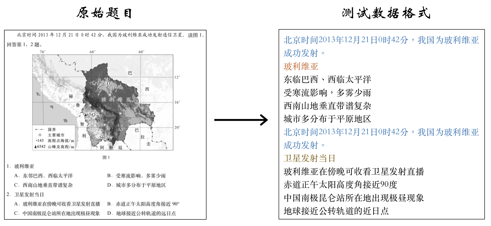

{% extends "base.html" %}
{% import "bootstrap/wtf.html" as wtf %}

{% block title %}Submission{% endblock %}

{% block page_content %}
<div class="page-header">
    <h3>
        提交测试数据应当存放在txt格式文件中，且应当符合符合如下规范：
    </h3>
    <ul>
        <li style="line-height:40px">将题目分为背景材料、问题、选项三块，每个部分依次存放到标注文件中; </li>
        <li style="line-height:40px">一般题目拥有4个选项，因此一道完整的题目包含1个背景材料、1个问题、4个选项 <b>6</b> 行;
        <li style="line-height:40px">通常背景材料存在多题共用的情况，例如背景材料为 “(一)“一带一路” 是 经济......回答1-3题。”，那么图3 1中第1题、第2题共用一个背景材料; </li>
        <li style="line-height:40px">如果背景材料不存在，则该行标注为 “B:”;</li>
        <li style="line-height:40px">选项中存在1、3这样的数字，那么每个选项中的数字要用文字替换，比如下
图中第1题中A选项，分别用 “东部产能增强，需要加强对外合作” 和 “中亚油气丰富，需要寻求消费市场” 替换; </li>
    </ul>
</div>
<div class="biaozhu">
    <h3>标注示例</h3>
</div>
<div class="figure" align="center">
    
</div>
<div class="bottom">
    <form action="" method=post enctype=multipart/form-data>
        <p><input type=file name=file>
            <br>
        <p><input type=submit value=Upload>
    </form>
</div>

{% endblock %}
